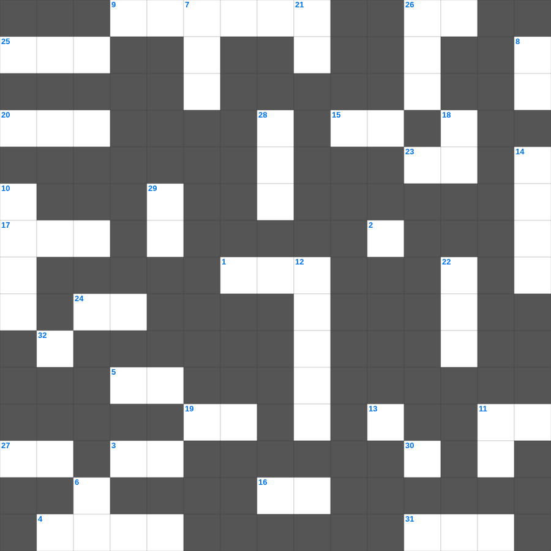

사무엘상 마스터 100
📌 서비스 정의
십자가로세로는 교회 주보와 주일학교에서 사용할 수 있는 성경 기반 가로세로 퍼즐 서비스입니다. 성경 인물, 사건, 핵심 구절을 바탕으로 제작되었습니다. 온라인 풀이 및 인쇄 기능을 제공합니다.
📖 사무엘상란?
사무엘상은 선지자 사무엘의 출생과 사역, 이스라엘의 첫 왕 사울의 등장, 그리고 다윗이 왕으로 기름 부음 받기까지의 갈등을 기록합니다.
📚 사무엘상의 주요 사건·주제
사무엘의 출생과 부르심 · 사울이 첫 왕이 됨 · 다윗과 골리앗의 싸움 · 다윗과 사울의 갈등 · 다윗의 도피 생활
사무엘상의 말씀을 퀴즈로 배우는 사무엘상 주일학교 퀴즈입니다. 가로 힌트와 세로 힌트를 보고 35개의 단어를 맞춰보세요. 인쇄도 가능하고 정답 확인도 바로 되니 소그룹 모임이나 가정 예배 시간에도 활용하실 수 있습니다.

📝 가로 힌트
1. 르호보암이 유다와 베냐민 지파를 모아 모은 용사의 수
2. 누구든지 하늘에 계신 내 하나님의 이것대로 행하는 자가 내 형제요 자매요 어머니이니라
3. 바울과 실라가 감옥에서 찬양할 때 함께 있던 자
4. 솔로몬의 신하였으나 반역하여 북쪽 왕이 된 사람
5. 너희가 어떠한 사람이 되어야 마땅하냐 거룩한 행실과 이것으로
9. 여호사밧 왕 때 찬양대가 앞장서자 적들이 무너진 곳
11. 나와 아버지는 이것이니라 하신대 유대인들이 다시 돌을 들어 치려 하거늘
13. 제2계명 '우상을 만들지 말고 그것들에게 이것하지 말라'
15. 내 살은 참된 양식이요 내 피는 참된 이것이로다
16. 아담과 하와가 쫓겨난 동네
17. 삼손의 아버지 이름
19. 이새는 누구의 아버지인가
20. 성령님이 우리 곁에서 돕는 분이라는 뜻
23. 네 하나님 여호와를 잊어버리지 않도록 이것하라
24. 믿음으로 이것이 났을 때에 그 부모가 아름다운 아이임을 보고 석 달 동안 숨겨
25. 베드로후서 2장 13절: 그들은 너희와 함께 먹을 때에 무엇인가
26. 다메섹 도상에서 예수님을 만난 이방인의 사도
27. 하나님의 나라는 먹는 것과 마시는 것이 아니요 오직 성령 안에 있는 의와 평강과 이것이라
30. 사울이 제사장들을 죽인 사건이 일어난 마을
31. 종교 개혁을 일으킨 유다의 선한 왕
📝 세로 힌트
2. 이 세상도, 그 정욕도 지나가되 오직 하나님의 이것을 행하는 자는 영원히 거하느니라
6. 한나가 아들을 달라고 기도하며 서원한 장소
7. 하나님이 약속하신 젖과 꿀이 흐르는 땅
8. 히브리 산파들에게 아들을 죽이라 명령한 애굽 왕
10. 디모데후서가 기록된 장소
11. 그들이 이제는 더 나은 본향을 사모하니 곧 이것에 있는 것이라
12. 언약궤 안에 들어있는 세 가지 중 하나
14. 성경에서 가장 넓은 강
18. 너희는 악을 미워하고 선을 사랑하며 성문에서 이것을 세울지어다
21. 빌레몬서 1장 22절: 너희 이것으로 내가 너희에게 나아갈 수 있기를 바라노라
22. 저주를 선포한 산
26. 언어가 혼잡해져 사람들이 흩어지게 된 탑
28. 이스라엘이 애굽을 탈출한 사건
29. 임금들과 높은 지위에 있는 모든 사람을 위하여 하라 이는 우리가 모든 경건과 이것함으로 고요하고 평안한 생활을 하려 함이라
32. 나단이 다윗에게 선포한 죄의 대가 '이것이 네 집에서 떠나지 않으리라'
📖 함께 읽으면 좋은 성경사전
퍼즐을 풀기 전에 읽으면 힌트가 쉬워지고, 풀고 나서 읽으면 내용을 한 번 더 복습할 수 있습니다.
🧩 이 퍼즐에서 배우는 내용
이 퍼즐은 사무엘상 마스터 100의 핵심 단어와 개념을 자연스럽게 복습할 수 있도록 구성되었습니다. 주일학교 수업이나 개인 성경공부에서 학습 내용을 점검하는 용도로 바로 활용할 수 있습니다.
🧑🏫 교회 교육 자료 활용
이 퍼즐은 주일학교 교재 추천 자료로 활용할 수 있고, 주일학교 주보에 넣기 좋은 분량으로 구성되어 있습니다. 수업용 주일학교 교안에 활동지로 붙이거나, 예배 후 복습용 주일학교 공과교재로 바로 사용할 수 있습니다.
🏷️ 키워드
사무엘상 주일학교 퀴즈, 사무엘상, 십자가로세로, 성경퀴즈, 말씀퀴즈, 가로세로퍼즐, 주일학교 교재 추천, 주일학교 주보, 주일학교 교안, 주일학교 공과교재